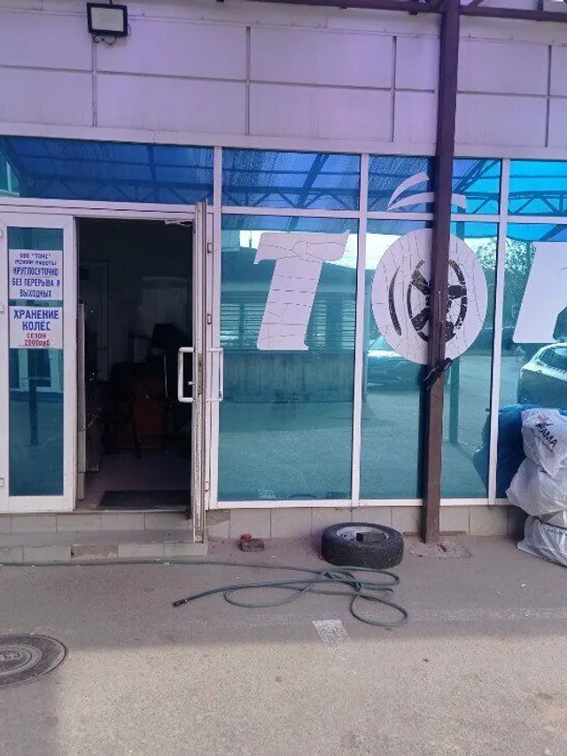
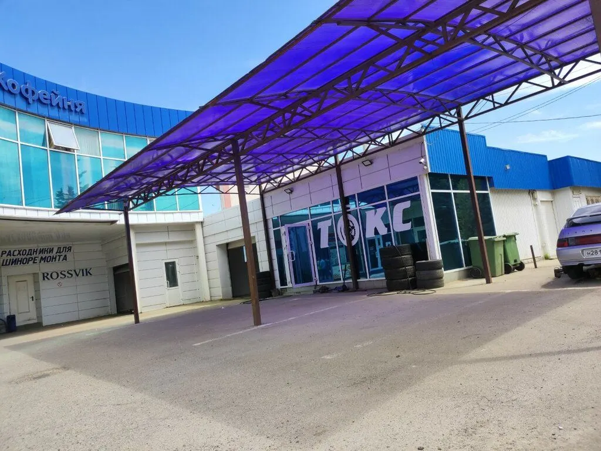
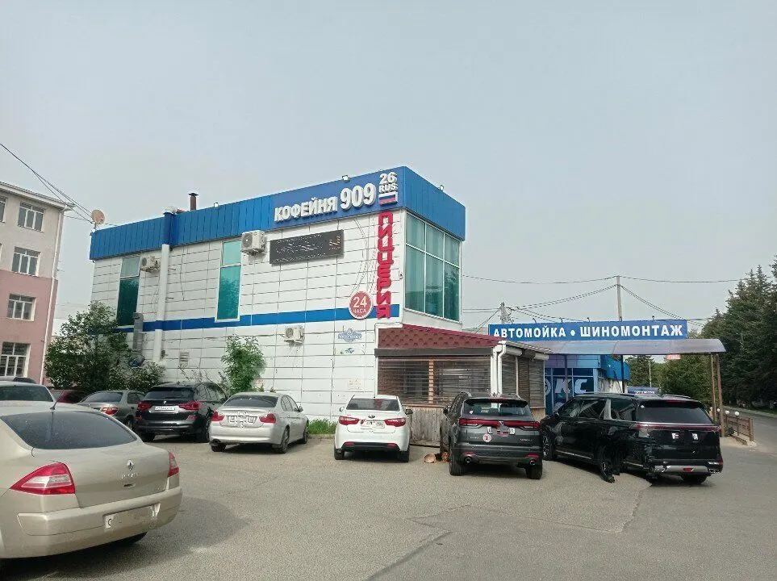
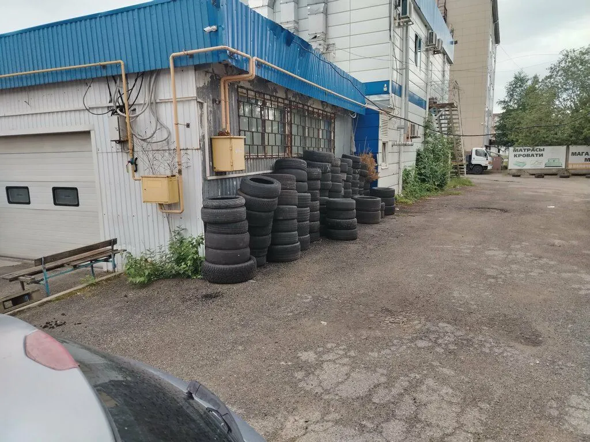
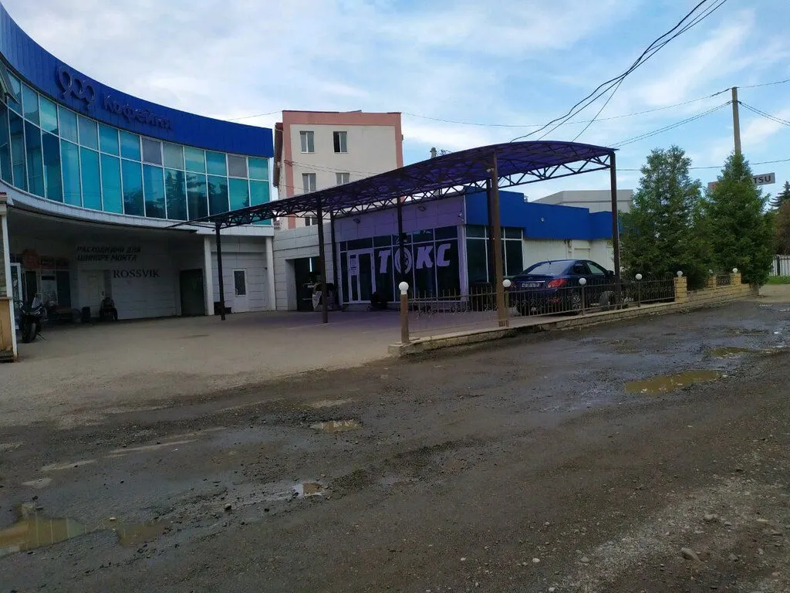

Автомойка · шиномонтаж · хранение шин
«Токс»: мойка и шиномонтаж в Ставрополе
Выбираете услугу, день и время, затем звоните по номеру. Круглосуточно. Мойка кузова – 300 ₽.

- 4,2 на Яндекс Картах, 40 отзывов
- Круглосуточно, ежедневно
- Мойка кузова – 300 ₽

Услуги и цены
Услуги и цена мойки – с карточки на Яндекс Картах.
Мойка
- Мойка кузова300 ₽
- Химчистка салонауточнить
Шиномонтаж и сервис
- Шиномонтажуточнить
- Хранение шинуточнить
- Базовое сервисное обслуживаниеуточнить
Цены на шиномонтаж на карточке не указаны – стоимость уточняйте по телефону.
Как записаться
- 01
Выбираете услугу, день и время
Ниже, в форме записи: сообщение уходит в мессенджер с готовым текстом.
- 02
Или пишете и звоните сами
Контакты – в конце страницы, работаем круглосуточно.
- 03
Приходите: проспект Кулакова, 9Г
Адрес и карта – в конце страницы.



Что вас ждёт
Работаем круглосуточно
Гость пишет в отзыве: большой плюс режим работы.
Запись без ожидания
Клиентка отмечает: если записываешься – ждать не приходится.
Хранение колёс
В отзыве: давно обслуживаются и хранят колёса.
Отзывы с Яндекс.Карт
«Самый лучший и надёжный шиномонтаж ,сделают на высшем уровне.За хорошим качеством сюда»
Марина Какаева · 2 апреля
«Быстро, качественно и цена отличная!!! Большой плюс режим работы, очень понравилось!»
Марина Косинова · 20 июня
«Много лет там обслуживаюсь и храню колеса. Ребята знают своё дело, если записываешься- ждать не приходится. Девочки чудесные, много раз помогали в нестандартных ситуациях. Спасибо!!»
Яна · 18 декабря
Отзывы с карточки на Яндекс.Картах, без правок.
Частые вопросы
Вы работаете ночью?
Да, на карточке указан круглосуточный режим.
Сколько стоит мойка кузова?
300 ₽ – по карточке на Яндекс Картах.
Можно ли хранить шины?
Да, хранение шин указано на карточке.
Где вы находитесь?
Ставрополь, проспект Кулакова, 9Г.
Запишитесь на удобное время
- Адрес
- проспект Кулакова, 9Г, Ставрополь
- Часы
- ежедневно, круглосуточно
- Телефон
- +7 (8652) 56-46-50